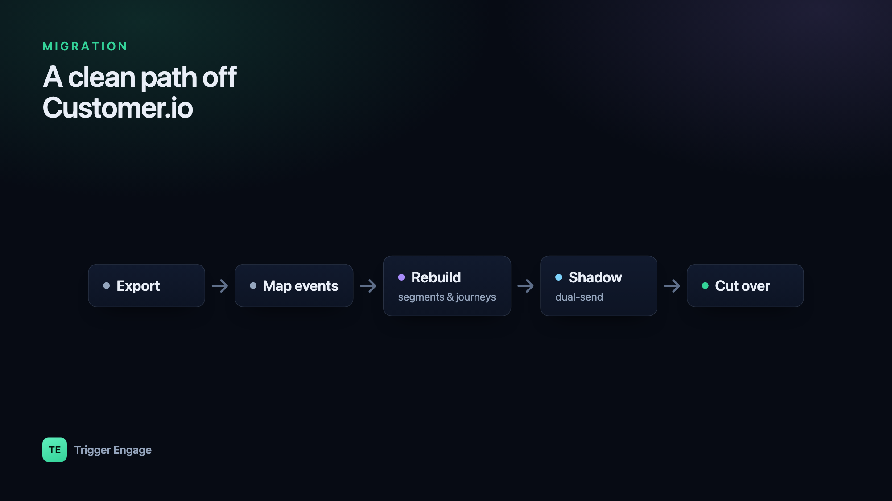

Whether it's the per-profile bill creeping up every quarter or a growing wish to own your own customer data, plenty of teams decide to migrate from Customer.io. The good news: a clean migration is very doable if you plan it. The bad news is that the sloppy version double-sends messages to real people and loses years of engagement history. This guide walks the whole move step by step so you avoid both.

Why teams migrate
Customer.io is a capable, well-built platform, and for many teams it's the right call to stay. But three reasons come up again and again when people decide to leave. The first is cost at scale: pricing is tied to the number of profiles you store, so as your list grows — including dormant and duplicate records — the bill climbs whether or not those people ever open an email. The second is data ownership: your profiles, events, and message history live in someone else's system, and getting a full, portable copy takes deliberate effort. The third is self-hosting: some teams, especially in regulated or privacy-sensitive markets, want the whole engine running on infrastructure they control.
If you're still deciding where to go rather than how to get there, start with our roundup of Customer.io alternatives and come back once you've shortlisted a destination. One option worth a look is Trigger Engage, an open-source (MIT) engine you can self-host or embed directly in a Laravel app — there's no per-profile fee, so a large, partly-dormant list costs you nothing extra.
Before you start: audit what you have
Migration is mostly a data and inventory problem, not a coding problem. Before touching anything, write down what actually exists in your current account. Inventory your campaigns and journeys, your segments, your email and message templates, every tracked event name, and every integration that reads from or writes to Customer.io (your app, your CDP, your webhooks, your analytics). Then mark what's genuinely in use. Most accounts carry a long tail of abandoned drafts, one-off broadcasts, and segments nobody references. You do not need to port those. Migrating only what's live is the single biggest thing that keeps the project from ballooning.
The migration, step by step
With the audit done, the move itself breaks into five stages. Do them in order — the early stages make the later ones safe.
- Export your data. Pull your people and their attributes, your segment definitions, your templates, and your event history out of Customer.io. At a high level, Customer.io provides account data exports plus an API you can page through for people and their events; the exact screens change over time, so follow their current export documentation rather than any fixed click-path. Save everything as flat files (CSV or JSON) in your own storage first — that archive is your safety net regardless of which tool you land on.
- Map events and identifiers. This is the step that makes or breaks a clean cutover. Keep the same person identifiers (the ID you already use to `identify` a user) and the same event names on the new side. If a signup fires
account_createdtoday, it should fireaccount_createdtomorrow. Because both platforms follow the identify/track pattern, your call sites port with only the client swapped. A tiny before/after makes it concrete:
Keeping names and IDs stable means your journeys and segments port cleanly instead of needing a rewrite. For the Laravel specifics of wiring these calls, see firing events from Laravel.// Before — Customer.io Customerio::identify($user->id, [ 'email' => $user->email, 'plan' => $user->plan, ]); Customerio::track($user->id, 'account_created', [ 'source' => 'web', ]); // After — Trigger Engage (same IDs, same event names) TriggerEngage::identify($user->id, [ 'email' => $user->email, 'plan' => $user->plan, ]); TriggerEngage::event($user->id, 'account_created', [ 'source' => 'web', ]); - Rebuild segments and journeys. Recreate your audiences in the new tool's segment builder and your automations in its journey builder. Because you kept the same attributes and event names, the rules translate almost one to one — "users on the free plan who haven't logged in for 14 days" is the same definition on either side. Our guides to behavioral segmentation and lifecycle email sequences cover how to structure these so they're maintainable rather than a tangle of one-off rules.
- Run in shadow mode. Before you send a single real message from the new system, run both in parallel. Send your events to Customer.io and the new tool, but keep Customer.io authoritative and disable outbound sending on the new side. Now you can compare: are the same people entering the same journeys? Do the templates render identically? Do the segment counts match? Trigger Engage supports exactly this shadow-mode cutover, so you can validate everything end to end without any user receiving a duplicate.
- Cut over. Once the counts and renders line up, flip the SDK so the new system becomes authoritative and enable its outbound sending. Import your existing suppression and opt-out list first — this is non-negotiable — and keep the old account's suppression list on hand as a reference. Watch deliverability closely on the first few real sends: a new sending domain or IP warms up gradually, so start with lower-volume, high-engagement journeys before turning on big broadcasts.
Common pitfalls
Most migrations that go wrong go wrong in a small number of predictable ways. Double-sends happen when both systems send at once — the shadow-mode discipline above prevents it. Broken suppression is the scariest: if opt-outs don't carry over, you can email people who asked never to hear from you. Lost pre-signup history bites teams that tracked anonymous visitors, since a naive import only brings identified profiles. And hard-coded template IDs quietly break journeys when the new system assigns its own IDs.
| Risk | How to avoid it |
|---|---|
| Double-sends to real users | Keep the old system authoritative and disable outbound on the new side until cutover. |
| Broken suppression / opt-outs | Export and import the suppression list before the first send; verify a known opted-out address is suppressed. |
| Lost pre-signup history | Choose a tool with anonymous→identified merge so early events attach to the profile once the person signs up. |
| Hard-coded template IDs | Reference templates by name or key, not by numeric ID, and re-point them after rebuild. |
How long it takes
Timelines vary with account complexity, not company size. A small setup — a handful of journeys, a few segments, one app firing events — is realistically a few days of work end to end. A large account with dozens of interlocking journeys, many integrations, and a big historical dataset is more like two to four weeks, and most of that is the shadow-mode period where you're watching and comparing rather than building. Budget for the observation window; rushing the cutover is where the expensive mistakes live.
Frame the destination correctly and the whole project gets simpler: you're not just swapping one vendor for another, you're moving to a marketing-automation platform you actually control — one where segments, journeys, and data all live on infrastructure you own. Trigger Engage runs standalone or embeds in Laravel via composer require trigger-engage/server; the docs cover installation, the SDK, and the shadow-mode workflow in detail.